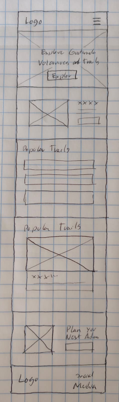
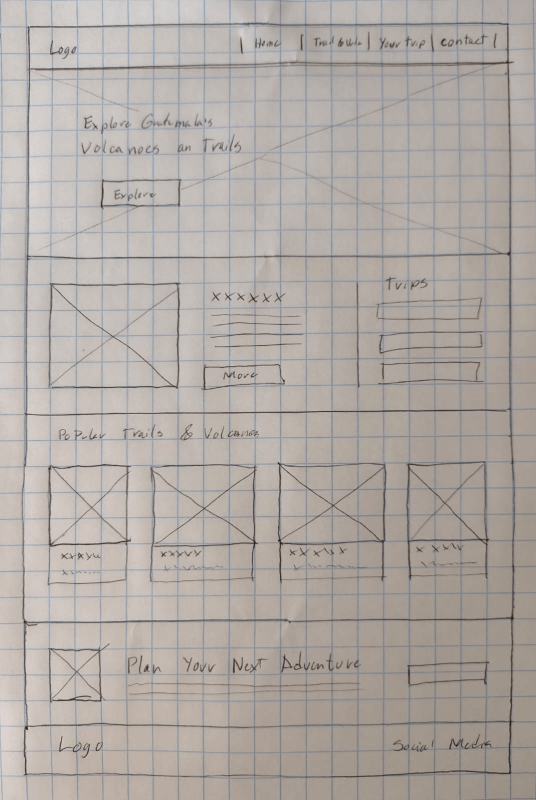

1. Site Name
Guatemala Trails and Volcanoes Guide
I chose this name because it clearly communicates the core subject of the website. Guatemala offers a rich variety of volcanoes and hiking routes, and this descriptive title immediately informs visitors that they will find structured, reliable information about local trails, elevations, difficulty levels, and outdoor preparation.
Optional domain availability: guatemalatrailsguide.org
2. Site Purpose
The website serves as an informational and responsive hub for hikers, outdoor enthusiasts, and travelers exploring Guatemala's mountains and volcanoes. Its scope includes:
- Home Page: Introduces the purpose of the site, highlights a featured volcano or trail, provides core mountain safety guidelines, and offers clear navigation.
- Trails & Volcanoes Directory: Dynamically renders at least 15 trails and volcanoes from a structured JSON data source using asynchronous fetch, displaying key attributes (elevation in meters, difficulty rating, geographic location, and estimated hiking time) with interactive filtering and modal details.
- Trip Planning & Registration: Shares preparation and essential gear guidance alongside an accessible HTML form where users can register interest for guided hikes or request trip information, displaying submitted values on a dedicated confirmation page.
3. Target Audience Scenarios
- Which beginner-friendly volcanoes near Antigua or Guatemala City can I hike in a single day, and how long does each ascent take?
- What essential gear, cold-weather clothing, and hydration supplies do I need to pack for an overnight camping trip on Acatenango Volcano?
- How can I compare the elevation and difficulty level of different Guatemalan trails before registering for a planned excursion?
4. Color Scheme
The selected palette reflects Guatemala's volcanic landscapes, lush cloud forests, and warm highland sunrises. These colors are applied exclusively throughout this site plan document:
Primary Color
Volcanic Charcoal
#222621
Used for the header, footer, and high-contrast body text.
Secondary Color
Summit Slate Blue
#414E63
Used for section headings (<h2>), left borders, and figure captions.
Accent Color
Autumn Amber & Ochre
#C47E1E & #C69214
Used for header/footer borders, heading underlines, and subtle highlights.
Supporting Nature Tone
Highland Olive Green
#5C6413
Used for trail badges, difficulty tags, and natural accents.
Background & Surface
Warm Mist & Crisp White
Page: #F7F5EF | Cards: #FFFFFF
Used for the main page background and content cards.
5. Typography
-
Headings Font — Montserrat (Bold 700 / Semi-Bold 600): Selected for its clean
geometric structure and strong readability, used on all
<h1>,<h2>, and<h3>elements as well as navigation links. - Body Font — Open Sans (Regular 400 / Semi-Bold 600): Selected for high legibility on both mobile and desktop screens, used for paragraphs, directory card details, lists, and form labels.
6. Home Page Wireframes
Low-fidelity black-and-white wireframes illustrating the responsive layout structure for the landing page
(index.html):

